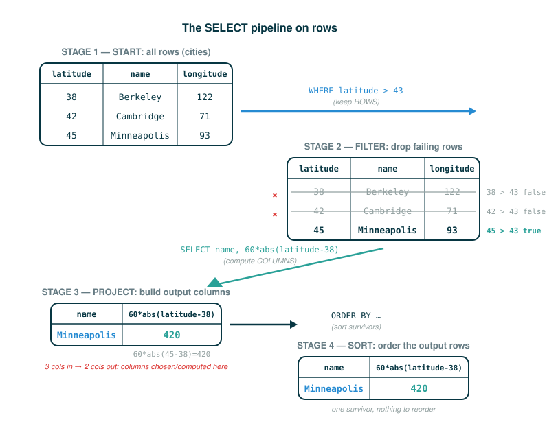

4.3.2 Select Statements, Projection, Filtering, and Ordering
In the previous packet you built tables and asked for everything in them with select * from cities;. That is the simplest possible question: "show me all of it."
Real questions are almost never that broad. You want some of the columns, not all of them. You want a column the table does not literally store, computed from the ones it does. You want only the rows that meet a condition. You want the answer sorted. By the end of this lesson you will be able to write a select statement that does all four of those things, and you will be able to read any clause of one by naming what it contributes.
Here is the single idea to hold onto: a select statement does not change the table you start from. It describes a brand new table, built out of an existing one, by choosing and computing columns, keeping some rows, and sorting the result.
A New View of the Same Data
Picture a teacher's gradebook. It has a row per student and these columns:
name | homework | quiz | examThe teacher is filling out final report cards and wants, for each student, just their name and their exam score:
name | examNotice what the teacher is and is not doing. The teacher is not deleting the homework and quiz columns from the gradebook. The original gradebook is untouched. The teacher is making a new, narrower view of it on a separate sheet, copying across only the two columns that matter for this task.
That is exactly what a select statement does, and the database has a name for it: projection. A select statement defines a new table by projecting an existing table, transforming each input row into one output row that contains only the columns you asked for, including columns you compute on the spot. The starting table stays exactly as it was.
The Shape of a Select Statement
In its simplest projecting form, a select statement names the columns it wants and the table to draw them from:
select [column description] from [existing table name]The columns of the resulting table are described by a comma-separated list of expressions. Each of those expressions is evaluated once for every row of the input table named in the from clause. A bare column name like latitude is one kind of column description; it simply pulls that column's value out of the row being projected. But a column description can be any expression, which is what makes projection powerful: you can compute new values, not just copy existing ones.
We will build the full statement one clause at a time, using the cities table from the previous packet:
latitude | longitude | name
38 | 122 | Berkeley
42 | 71 | Cambridge
45 | 93 | MinneapolisComputing a Column
Berkeley sits at latitude 38. Each degree of latitude measures about 60 nautical miles to the north, so multiplying the difference in latitude by 60 tells you how far north or south another city is from Berkeley's latitude. The official query computes that distance for every city:
sqlite> select name, 60*abs(latitude-38) from cities;
Berkeley|0
Cambridge|240
Minneapolis|420The column description here is 60*abs(latitude-38). There is no such column stored in the table; the database produces it fresh for each row. The key idea is where the name latitude gets its value. It is not a Python variable from some surrounding environment. It evaluates to the value of the latitude column in the row currently being projected. So the same expression yields a different number for each city, because latitude refers to a different value each time.
Walk the arithmetic for one row to make the mental model concrete. For Cambridge, whose latitude is 42:
60 * abs(42 - 38) = 60 * abs(4) = 60 * 4 = 240And for the other two rows:
Berkeley: 60 * abs(38 - 38) = 60 * 0 = 0
Minneapolis: 60 * abs(45 - 38) = 60 * 7 = 420Those three results are precisely the second column of the output. The first column, name, is the plainest kind of column description: it just copies the row's name across unchanged.
Following the line
Read the column-description part of the distance query one token at a time. Each branch row names what a token contributes; the final row states the value the whole expression produces for one example row (Cambridge, where latitude is 42):
60*abs(latitude-38)
├─ 60 .......... a constant multiplier: 60 nautical miles per degree
├─ * ........... multiply the constant by the value on its right
├─ abs ......... built-in function: distance from zero, never negative
├─ ( ........... begins the input to abs
├─ latitude .... the latitude column's value in this row (42 for Cambridge)
├─ - ........... subtract the value on its right
├─ 38 .......... Berkeley's latitude, the reference point
├─ ) ........... ends the input to abs
└─ evaluates to 240Naming a Computed Column With as
First, a point about how output columns get their names at all. Columns described by a simple name are named automatically: when a column description is just a bare column name like name, the resulting column keeps that same name without any effort on your part. The column that needs a name is the computed one, because an expression like 60*abs(latitude-38) has no obvious name of its own.
The query above computes a useful number but throws it away the instant it is displayed. If you intend to reuse a computed column, give it a name. Each column-description expression can optionally be followed by the keyword as and a name, and that name can then be referenced by later select statements.
Here the source first stores the computed distances in a new table, naming the computed column distance, and then queries that table by referring to the column by its new name:
sqlite> create table distances as
...> select name, 60*abs(latitude-38) as distance from cities;
sqlite> select distance/5, name from distances;
0|Berkeley
48|Cambridge
84|MinneapolisTwo statements are at work. The first uses create table ... as to run a projecting select and keep its result as a table called distances. Because the computed column was labeled as distance, the distances table has a real, named distance column. The second statement then projects distances, and this time it can write distance/5 directly, because distance is now a column it can name. The division produces 420/5 = 84 for Minneapolis, 240/5 = 48 for Cambridge, and 0/5 = 0 for Berkeley.
A useful way to picture the two-stage flow:
cities row -> compute name and 60*abs(latitude-38) as distance -> store in distances
distances row -> compute distance/5 and name -> display output rowFollowing the line
The new piece of syntax here is the as clause inside the column list. Read it token by token; the final row states the action it performs:
60*abs(latitude-38) as distance
├─ 60*abs(latitude-38) .. the column-description expression, computed per row
├─ as .................. attach a name to the column just described
├─ distance ............ the name the computed column will carry
└─ names this column "distance" so later queries can refer to itFiltering Rows With where
Projection decides which columns appear. It does nothing about which rows appear; so far every output has had one row per input row. To keep only some rows, add a where clause.
A where clause contains a filtering expression that is evaluated for each row. Only a row for which that expression evaluates to a true value is projected into the result; every other row is dropped. The official example keeps just the cities north of latitude 43, stores them as a table named cold, and then tags each survivor with a literal text column:
sqlite> create table cold as
...> select name from cities where latitude > 43;
sqlite> select name, "is cold!" from cold;
Minneapolis|is cold!The filtering expression is latitude > 43, checked once per row of cities:
Berkeley: 38 > 43 -> false -> dropped
Cambridge: 42 > 43 -> false -> dropped
Minneapolis: 45 > 43 -> true -> keptOnly Minneapolis passes the test, so the cold table has a single row. The second statement projects that one row and adds a second column described by the constant expression "is cold!" — a column description does not have to mention the table at all; a literal value is a perfectly good expression, evaluated identically for every surviving row.
The thing to appreciate is what you did not write: no loop, no counter, no "for each row" instruction. You stated a condition, and the database did the repeated checking for you. That is the declarative style at work.
Following the line
Read the where clause of the filtering query one token at a time. The final row states the action the clause performs:
where latitude > 43
├─ where ....... keep only rows whose condition is true
├─ latitude .... the latitude column's value in this row
├─ > ........... is the left value greater than the right?
├─ 43 .......... the threshold to compare against
└─ keeps rows where latitude > 43 (only Minneapolis, at 45)Ordering Rows With order by
The rows of a result so far have come out in whatever order the database produced them. To control the order, add an order by clause. It contains an ordering expression that is evaluated for each surviving row, and the resulting values are used as the sorting criterion for the result table; rows come out in increasing order of that expression.
The source sorts the distances table so the farthest city comes first:
sqlite> select distance, name from distances order by -distance;
84|Minneapolis
48|Cambridge
0|BerkeleyThe trick is the ordering expression -distance. Sorting is in increasing order, but negating each distance flips the comparison so that the largest distance becomes the smallest (most negative) key:
distance 84 -> key -84
distance 48 -> key -48
distance 0 -> key 0Sorted in increasing order, -84 comes before -48, which comes before 0. That puts Minneapolis (the largest actual distance) at the top. Negating the ordering expression is the standard way to turn an increasing sort into a decreasing one.
Following the line
Read the order by clause of the sorting query one token at a time. The final row states the action the clause performs:
order by -distance
├─ order by .... sort the result rows by the expression that follows
├─ - ........... negate the value on its right
├─ distance .... the distance column's value in this row
└─ sorts rows in increasing order of -distance (largest distance first)Putting the Clauses Together
Each clause you have learned does one job, and they combine in a fixed order inside a single statement. A select statement with all of them reads as: choose and name output columns, draw from an input table, keep the rows that pass a condition, and sort what remains.
The general form of a select statement places those four clauses in that fixed order:
select [columns] from [tables] where [condition] order by [order]Each bracketed piece is a placeholder for the parts you have already met one at a time: [columns] is the comma-separated column descriptions (optionally named with as), [tables] is the input table named in the from clause, [condition] is the filtering expression of the where clause, and [order] is the ordering expression of the order by clause. The where and order by clauses are optional; when you include them, they follow the column list and the from clause in exactly this sequence.
SQL is declarative: you describe the result with these clauses, and the database is free to compute it by whatever internal plan it likes. But for building intuition, it helps to have one logical order of operations in mind. A beginner-safe reading of the general form is this pipeline:
start with every row of the input table
-> drop the rows whose where condition is false
-> for each survivor, compute its output columns (the column descriptions)
-> sort the surviving output rows by the order-by expressionThe real database might filter, compute, and sort in a different internal order, or fuse the steps together, but the result it returns must match this description. That gap between "what you asked for" and "how the machine gets it" is the whole point of declarative programming.

⚠Common Beginner Traps
- Thinking
wherefilters columns. It filters rows. Projection (the column list afterselect) is what chooses columns. - Forgetting that each column description is evaluated separately for every row, so an expression like
60*abs(latitude-38)produces a different value per row. - Reading a name like
latitudeas a Python variable. Inside a query it means "the value of thelatitudecolumn in the current row," and it changes from row to row. - Assuming
order by -distanceis a magic spelling of "descending." It sorts in increasing order of the expression's value; negating the value is what reverses the apparent direction. - Confusing SQL
aswith Python assignment. SQLasnames a result column so later queries can refer to it; it does not store a value in a variable. - Forgetting that a column description can be a constant or any expression, like
"is cold!", not only a stored column name.
✓Check Your Understanding
- In the distance query, how many times is the expression
60*abs(latitude-38)evaluated, and why? - In the filtering query, why does only Minneapolis appear in the final output?
- What does writing
as distancein thedistancesquery make possible later? - Why does
order by -distanceput Minneapolis first in the sorting query? - The filtering query uses
where latitude > 43. If a fourth city sat at exactly latitude 43, would it be kept or dropped, and why?
Show the answers
- It is evaluated once for each row of
cities— three times — because every column description is computed once per input row before any row is displayed or ordered. - The
where latitude > 43clause keeps only rows whose latitude exceeds 43. Among the three cities, only Minneapolis (latitude 45) satisfies that condition, so thecoldtable has just that one row, and the final query projects it. as distancegives the computed column a name. Thedistancestable then has a realdistancecolumn, so a later query can refer to it directly, as indistance/5andorder by -distance.- The ordering expression
-distanceis sorted in increasing order. Negating the distances makes the largest distance (84) the smallest key (-84), so Minneapolis sorts to the top. - It would be dropped. The filter is the strict comparison
latitude > 43, and43 > 43is false, so a city exactly at latitude 43 fails the condition and never reaches the output; only rows strictly above 43 are kept.
§Summary
A select statement describes a new table built by projecting an existing one; it never alters the input table. The column descriptions after select choose and compute output columns, evaluated once per row, where a name like latitude means that row's column value. The keyword as names a computed column so later queries can refer to it. A where clause keeps only the rows whose filtering expression is true, and an order by clause sorts the survivors by an ordering expression — negate that expression to sort in decreasing order. Combined in a single statement, these clauses let a short, declarative query describe a substantial computation, leaving the database free to choose how to carry it out.
▶Step-Through Checkpoint
This checkpoint turns the projection, filtering, and ordering ideas into a step-by-step Python trace, so the compact SQL clauses have a visible, row-by-row machine model: each city is a tuple, the comprehension plays the column descriptions, the if plays where, and the sort plays order by -distance. Stepping through it draws the environment diagram these stages build. You will see projected grow into one tuple per row, then watch sorted hand the surviving rows to the lambda one at a time so it can compute each sort key. Before you step through the block below, write down three predictions: the full Cambridge tuple inside projected, elements in order; how many times the lambda sort key gets called; and the exact list the final line prints.
# (1)
cities = [
(38, 122, "Berkeley"),
(42, 71, "Cambridge"),
(45, 93, "Minneapolis"),
]
# Project (name, distance) per row, keeping latitude so WHERE can test it.
projected = [(latitude, name, 60 * abs(latitude - 38))
for (latitude, longitude, name) in cities]
# Filter the way WHERE latitude > 43 does, then sort the way ORDER BY -distance does.
result = sorted(((name, distance) for (latitude, name, distance) in projected
if latitude > 43),
key=lambda row: -row[1])
print(result)
Step through it one line at a time and check each prediction as the bindings appear. The Cambridge tuple is (42, 'Cambridge', 240), latitude kept up front so the filter can still test it. The lambda runs only once, because the latitude > 43 test drops Berkeley and Cambridge before sorting begins — filtering precedes ordering, as in the pipeline reading of the general form. Only Minneapolis survives, so the printed result is [('Minneapolis', 420)]. This is what SQL hides: declarative clauses becoming explicit, repeated, row-by-row work.